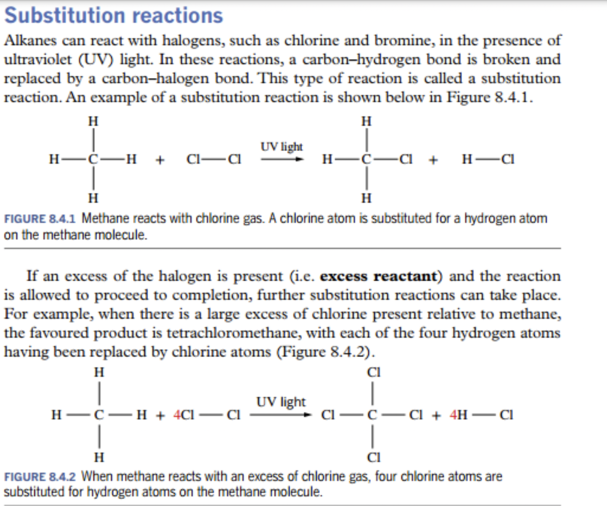
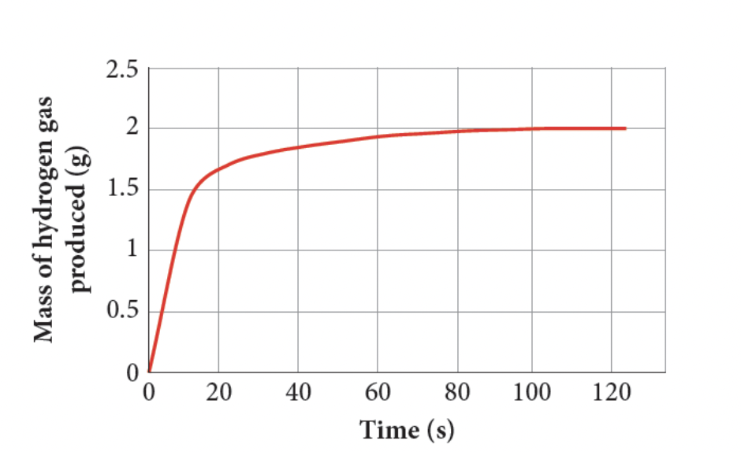
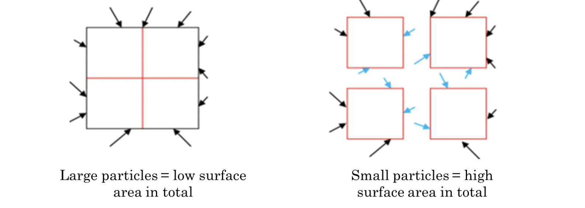
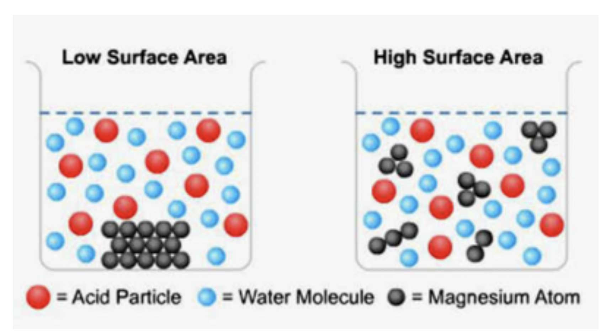

stuff/content not in anki deck
- not in anki deck because they are moreso calculations
- basically the stuff with no ✅
- e.g.
- iupac revision
- empirical formulae revision
Topic 4: CARBON CHEMISTRY & ENERGY
Structure & Naming
- ✅ 135. Explain why carbon is able to form such a diverse range of compounds, using knowledge of bonding capacity.
- Carbon has four valence electrons, allowing it to bond with a range of other atoms.
- Carbon has a large bonding capacity, as it is able to form 4 bonds, or form double or triple bonds.
- ✅ 136. Use molecular formulae, full structural formulae and condensed formulae to show the arrangement of atoms and bonds in covalent molecular substances, including hydrocarbons and haloalkanes.
- Molecular Formula
- Actual whole number ratio of the atom. Cyclohexane is
- full Structural formulae (see image)
- structural formula of cyclohexane:

- condensed formula (not condensed structural) would be
- Molecular Formula
- ✅ 137. Define hydrocarbon, and categorise simple hydrocarbons into alkanes, alkenes and aromatic hydrocarbons (benzene).
- a hydrocarbon is a molecule composed only of carbons and hydrogen.
- hydrocarbons are categorised by the number of their bonds as alkanes, alkenes, and alkynes.
- alkanes
- only single bonds
- alkenes
- one or more double bonds
- alkynes
- one or more triple bonds
- alkanes
- ✅ 138. Use the general formulae for alkanes and alkenes to recognise and categorise hydrocarbons.
- alkanes
- alkenes
- alkynes
- alkanes
- ✅ 139. Recognise cycloalkanes and cycloalkenes, and understand that they have different general formulae from their non-cyclic counterparts.
- cycloalkanes and cycloalkenes are just connected in a circle, with their general formulas being and respectively.
- ✅ 140. Describe hydrocarbons as saturated or unsaturated, and explain the difference between these terms.
- saturated hydrocarbons are hydrocarbons which only contains singular bonds.
- ie all cycloalkanes and alkanes are saturated, cycloalkenes, alkene and alkyne are not saturated, and hence called unsaturated
- iupac practice, no notes, just get better at naming and recognising through practice
- 141. Use IUPAC nomenclature to name straight and simple branched chain alkanes and alkenes (C1 – C8, one double bond per molecule).
- 142. Use IUPAC nomenclature to name straight chained haloalkanes (C1 – C8).
- 143. Draw and name structural isomers of alkanes and alkenes, specifically chain isomers and position isomers.
- ✅ 144. Draw and name geometric isomers of alkenes, using cis and trans notation.
- geometric isomerism
- isomers of alkenes
- (?) The structure around the carbon atom in a double bond is a triangular planar
- (?) Double bonds are rigid and the carbon atoms cannot rotate.
- (?) The substituent groups on the carbon atoms of the double bond are therefore in fixed positions.
- depends on whether substituent groups are on same side or different sides of the double bond, the geometric isomer is formed.
- isomers will have different chemical and physical properties
- geometric isomerism
- 145. Describe the nature of bonding in alkanes, alkenes and benzene, using ideas of single and multiple bonds (π bonds), and delocalisation.
-
needs more notes from in class stuff / i researched all of this so HIGH CHANCE WRONG or not needed
- alkanes
- composed of only single covalent bonds. (C-C)
- single bonds are formed by sharing two electrons (single sigma bond) between carbon atoms
- there are no delocalisation of electrons - electrons are localised between two bonded atoms. four sigma bonds / carbon atom, tetrahedral geometry.
- alkenes
- contains at least one double bond (C=C)
- this double bond consists of one sigma bond and one pi bond
- there is limited delocalisation - this is due to the presence of the pi bond.
- contains at least one double bond (C=C)
- benzenes
- hexagonal ring of six carbon atoms, alternating single and double bonds.
- benzene has extensive delocalisation of pi electrons.
- in benzene, the six pi electrons are not localised within specific double bonds, but delocalised over the entire hexagonal ring. (??)
-
- ✅ 146. Explain why alkenes are able to form geometric isomers, whereas alkanes are not.
- free rotation is not possible in double bonds
Reactions of Hydrocarbons
- ???? 147. Explain the difference in chemical reactivity of alkanes, alkenes and benzene using discussion of bonding.
- Bonding:
- Alkanes are all single bonded,
- alkenes contains at least one double bond (C=C)
- double bond consists of one sigma bond and one pi bond
- and benzene is an arene (misleading as arenes dont react with bromine water XD)
- hexagonal ring of 6 carbon atoms, alternating double and single bonds.

- hexagonal ring of 6 carbon atoms, alternating double and single bonds.
- reactivity (ordered + reasoning)
- alkenes are relatively more reactive than alkanes and benzenes
- pi bond = more reactive than alkanes, as it is weaker
- alkanes are relatively unreactive
- due to strength of carbon-carbon single bonds
- electrons are evenly distributed, which makes it hard to break these bonds.
- benzenes are relatively less reactive than alkanes and alkenes
- this is because the pi electrons are delocalised.
- this spreads electron density (? idk if this is in the lucarelli/syllabus)
- alkenes are relatively more reactive than alkanes and benzenes
- Bonding:
- ✅ 148. Write equations, and draw and name the products for substitution reactions of alkanes and benzene with halogens.Â
- alkane example:
- ethane:
- benzene example
- benzene:
- occurs when alkane/benzene is combined with chlorine water or bromine water, and one of the H in the hydrocarbon is replaced (substituted) of one or more H atoms with Cl or Br atoms.
- alkane example:
- ✅ 149. Explain why substitution reactions of alkanes require visible / UV light to take place.
- UV light / heat speeds up the rate of reaction.
- uv light is used to overcome the activation energy, it is done by breaking the hydrocarbon bonds to form radicals
- ✅ 150. Recognise that substitution reactions of benzene require a catalyst.
- activation energy of benzene is higher, because the electrons are delocalised and thus benzene is relatively less reactive than alkane. thus, uv light, the catalyst, which is able to provide more energy than light can cause benzene to react. (? IDK IF THIS IS A GRADE ANSWER, I CAME UP WITH IT BY MYSELF XD)
- ✅ 151. Identify, draw and name the products from single and multiple substitution reactions.
- ✅ alkanes can react with halogens, such as bromine and chlorine in UV light
- ✅ if there is excess of the halogen, then reaction is allowed to proceed to completion
- ✅ 
- wowie
- ✅ 152. Write equations, and draw and name the products of addition reactions of alkenes, with halogens, hydrogen halides and hydrogen.
- preface: alkenes go through addition reactions because it is unsaturated - alkanes and benzenes do not (even tho benzene is unsaturated)
- double bond is replaced by atoms like H, F, Cl, Br, I
- reagents:
- note H2 need Pt catalyst
- br2 and cl2 most convenient in lab - bromine water and chlorine water
- ✅ 153. Describe how aqueous solutions of bromine and iodine can be used to test for unsaturation, and give observable outcomes.
- bromine is used to test for unsaturation.
- aqueous bromine solution is orange in colour.
- few drops added to alkane and benzene, there is no immediate reaction
- because substitution reactions are slow and requires a catalyst
- but added to alkene, or another unsaturated compound, orange colour disappears almost instantly, as bromine is consumed!
- ✅ 154. Write equations, and draw and name the products of complete combustion reactions of hydrocarbons.
- hydrocarbons are excellent fuels, and when ignited in excess air (O2), they produce carbon dioxide, water vapour and heat energy
- called combustion reactions
- ✅ 155. Given information about the products, write equations for the incomplete combustion reactions of hydrocarbons.
- occurs if air (o2) supply is limited.
- carbon monoxide and even soot [C(s)] can be produced
- ✅ 156. Explain why incomplete combustion is undesirable when using hydrocarbons as fuels. (PROBABLY A QUESTION)
- produces significantly less energy than complete combustion
- potential health hazard due to toxic products formed (carbon monoxide is toxic, soot is toxic (if you inhale it))
- risk is hypoxia when inhaling carbon monoxide.
- carbon monoxide is colourless and odourless gas, so it may go unnoticed.
- to manage risks, there needs to be adequate ventilation.
- 157. Discuss the benefits and drawbacks of using hydrocarbons as fuels, including the effect on the environment. (SHE)
- benefits (?)
- cheaper and more available than other fuel sources like biofuels (??)
- drawbacks
- hydrocarbon combustion reactions create carbon dioxide, which is a greenhouse gas and a carbon emission.
- greenhouse gases like co2 and methane (ch4) contribute to warmer atmosphere by reabsorbing heat that would otherwise be radiated from the earths surface and out into space.
- hydrocarbon combustion reactions create carbon dioxide, which is a greenhouse gas and a carbon emission.
- benefits (?)
- 158. Compare the effectiveness and suitability of different fuels, including hydrocarbons and biofuels (biogas, biodiesel, bioethanol), and suggest why certain fuels are used. (SHE)
- idk about hydrocarbons
- fuels made by living organisms or the waste produced are called biofuels.
- advantages (vs fossil):
- biofuels provides renewable energy source - fossil doesn’t
- less impact on environment
- production of electricity, heating water and fuels for buses.
- able to provide energy at a small scale
- negligible or extremely low sulphur content.
- combustion of sulphur creates emission of sulphur dioxide; which is a respiratory irritant and leads to acid rain.
- calculations stuff
- 159. Calculate percentage composition of a hydrocarbon from the relative atomic masses of the constituent species.
- you will be given a table, with isotopes and their relative abundance.
- relative atomic mass =
- if you want to calculate the percentage composition, percentage composition (in %)
- idk if this is correct, I dont remember revising this in class so i am lost :(
- 160. Use the mole concept and the law of conservation of mass to calculate quantities of reactants and products in a chemical reaction.
- 161. Identify and calculate empirical formulae for hydrocarbons using percentage composition data and combustion analysis data, and relate this to the molecular formulae.
- 162. Use molecular mass and empirical formulae calculations to establish molecular structure.
Topic 5: ENERGY & RATE
rates of reaction report notes in class :
Energy & Enthalpy (NOT IN CAP)
- 163. State that kinetic theory is used to explain the macroscopic behaviour of gases using understanding of the molecular behaviour of particles.
- all gases exert pressure and take the space of the container they exist in.
- the kinetic theory (current model) states that:
- gases are composed of particles in rapid continuous random motion.
- attraction repulsion gases not important
- total volume of all particles not important.
- particles of gas have kinetic energy , motion, v and mass, m.
- average kinetic energy of particles is proportional to temperature
- same for all gases same temperature.
- particle collisions are elastic, and does not lose kinetic energy due to collisions.
- 164. Describe the properties of an ideal gas, and describe the differences between an ideal gas and a real gas.
- the ideal gas:
- takes shape of container and have low density
- can be compressed
- readily diffuse through other gases
- exert pressures
- difference is
- particles of an ideal gas have insignificant volume but real gas sometimes volume of particles is significant compared to volume occupied by gas as a whole.
- some real gases have significant forces of attraction.
- as a result of the difference of these properties, the ideal gas compared to the real gas:
- have zero volume at zero kelvin
- since real gas particles occupy space, it will never have 0 volume.
- if real gas is cooled/compressed it will condensed to form liquid - bcos weak inter-particle attraction that exists in real gases.
- the ideal gas:
- 165. Use kinetic theory to explain the behaviour of ideal gases, including diffusion and compressibility.
- 166. Describe the relationship between temperature, kinetic energy and velocity of particles in a qualitative fashion.
- Diffusion - gases rapidly diffuse as the particles are moving rapidly and continue to move until they hit something
- Compressibility - gases are compressible as there is a large amount of space between the particles
- 167. Explain the origin of the Kelvin temperature scale, and state the meaning of the term absolute zero.
- 168. Convert temperatures between Celsius and Kelvin.
- temperature is measure of average kinetic energy of the particles.
- temperature of gases is measured in Kelvin (K)
- , Degrees Celsius + 273.15 = Kelvin, Kelvin - 273.15 = Degrees Celsius
- 169. Use kinetic theory to describe and explain the relationships between pressure, temperature and volume of an ideal gas in a qualitative fashion, (Boyle’s Law, Charles’ Law, and Pressure Law).
- 170. Draw and interpret graphs that represent the relationship between pressure, temperature and volume.
- 171. State that the relationships between pressure, temperature, volume and number of moles can be combined to give the ideal gas equation, PV = nRT (Use of equation not required).
- 172. Describe the internal energy of a system as the sum of the kinetic energy and the potential energy of the particles.
- 173. Describe the enthalpy of a system as a measure of the energy stored within a system, and state that it cannot be measured directly.
- 174. Describe the enthalpy change of a system as the heat energy exchange with the surroundings.
- 175. State that enthalpy and enthalpy change values are given at STP conditions.
- 176. Describe and explain the enthalpy changes in a system in terms of stored (chemical potential) energy of reactants and products, and energy transfer in the form of heat, using the Law of Conservation of Energy.
- 177. Describe observable changes in temperature, and use this evidence to establish whether a process is exothermic or endothermic.
- 178. Explain the enthalpy changes in exothermic and endothermic processes in terms of energy input for breaking of existing bonds, and energy output from the formation of new bonds.
- 179. Use thermochemical equations to represent the enthalpy changes in chemical reactions.
- 180. Draw and interpret enthalpy profile diagrams for exothermic and endothermic reactions using a quantitative scale for enthalpy, including accurate labels for reactants and products, activation energy, enthalpy change and transition state / activated complex.
- 181. Generate experimental temperature data from a reaction, to calculate the enthalpy change per mole of reaction (as stated in the chemical equation), given ∆H = mc∆T, (c = specific heat capacity of solution, assumed to be 4.18 JK-1mol-1). (SIS)
- 182. Evaluate outcomes from experiments involving enthalpy changes, identify sources of experimental error, and discuss the effect on enthalpy change values calculated. (SIS)
- 183. Conduct an investigation into choice of fuels for a purpose; propose hypotheses, predict outcomes, collect reliable and valid data, from which conclusions can be drawn. (SIS)
- 184. Use enthalpy change data to compare the energy content or density of fuels, including biofuels.
Rate of Reaction
- ✅ 185. State that the rate of a chemical reaction can be quantified by measuring the rate of change in an observable quantity that indicates amount of reactant used up or product made.
- rate is how quickly one quantity changes compared to another.
- in chemical reaction, the rate of reaction is defined as the amounts of reactants used up or amount of products formed in given time.
- the rate of reaction =
- (change in one measurable quantity over change in time)
- 186. Describe a range of methods to measure the rate of a reaction, including volume of gas produced, mass lost, colour change and changes to transparency.
- we know that , and the amount can be volume of gas produced, mass lost, colour change and changes to transparency.
- we can graph this against time, to get the reaction rate, which is the gradient (m = rise/run) where time is x value, amount of substance used or produce is y value.
- 
- ✅ 187. Describe how to change the rate of a chemical reaction, using changes to reactant concentration, gas pressure, temperature, surface area of solid reactant, or use of a catalyst.
- ✅ factors that affect reaction rates are nature of reactants, concentration rate, gas pressure, temperature, surface area of solid reactant, or use of catalyst.
- ✅ nature of reactants
- reactants requiring smaller amount of energy to break will have higher reaction rate
- if the bonds only require a small amount of energy to break, a larger number of particles will have successful collisions
- ✅ concentration & pressure
- concentration measures number of particles in a certain volume of solution
- when concentration increases, greater number of reactant particles in given volume.
- increases frequency ( total n. of) collisions between reactants in a given time.
- % of collisions remain the same, higher frequency will lead to increase no. of successful collisions between reactants
- increasing pressure works a similar way, increasing pressure increases no. of gas particles/molecules in a given volume.
- more frequent collisions, and therefore a higher number of successful collisions - increasing reaction rate.
- concentration measures number of particles in a certain volume of solution
- ✅ surface area
- reaction only takes place between particles that collide.
- in a solid, only the exterior particles are available to react.
- by dividing a solid mass into smaller pieces, interior particles are exposed and therefore able to react - total surface area has been increased.
- 
- increases frequency of collisions.
- -> increase in number of successful collisions -> increases reaction rate.
- ✅ temperature
- at a given temperature, particles of a substance will have different amounts of kinetic energy. (as average kinetic energy determines temperature)
- higher temperature, higher average kinetic energy.
- more particles will have enough energy to have a successful collision (more particles will have enough energy exceeding the activation energy)
- more successful collisions in the same time - larger reaction rate.
- higher temperature the particles are also moving faster due to higher Ke
- therefore will have more collisions/higher frequency.
- relatively small increase to the reaction rate compared to the increase in kinetic energy
- only particles with the activation energy, or greater will have enough energy to break the bonds of the reactants to have a successful collision.
- ✅ catalyst
- catalyst is a substance that alters rate of reaction without being consumed (or used up) in the reaction
- provides alternative pathway for a reaction
- positive catalyst means provides easier pathway with lower activation energy.
- meaning more particles will have sufficient energy for successful collisions.
- increases frequency of successful collisions, as percentage of successful collisions is increased.
- reaction rate increases.
- ✅ 188. State that a catalyst is a substance that speeds up a chemical reaction without being consumed.
- substance that alters rate of reaction without being consumed (or used up) in the reaction
- provides alternative pathway for a reaction
- positive catalyst means provides easier pathway with lower activation energy.
- meaning more particles will have sufficient energy for successful collisions.
- increases frequency of successful collisions, as percentage of successful collisions is increased.
- reaction rate increases.
- 189. Conduct experimental work safely, competently and methodically in order to collect valid and reliable data to measure the rate of reaction. (SIS)
- 190. Represent rate of reaction data in tables and graphs, using correct units and symbols, in order to identify trends and any anomalous data. (SIS)
- 191. Evaluate the effect of measurement error in numerical data. (SIS)
- ✅ 192. Explain the factors that affect the rate of reaction using collision theory.
- FOR A REACTION TO OCCUR:
- REACTING MOLECULES MUST COLLIDE WITH EACH OTHER
- THE COLLISIONS MUST OCCUR WITH ENOUGH ENERGY to disrupt bonds in the reactants (KNOWN AS ACTIVATION ENERGY, )
- molecules must collide with correct orientation.
- that is the basis for collision theory
- FOR A REACTION TO OCCUR:
- 193. Predict the outcome on the rate of reaction when conditions for a chemical reaction are altered using collision theory.
- successful collision
- has sufficient energy and an appropriate orientation to allow bonds in reactant to be broken and new bonds to be formed.
- unsuccessful collision
- energy/orientation not satisfactory.
- rate of reaction equals = number of collisions / time
- number of successful collisions/rate of reaction depends on:
- total number of collisions/frequency of collisions
- percentage of collisions that are successful (influenced by activation energy and orientation)
- number of successful collisions/rate of reaction depends on:
- successful collision
- ✅ 194. State that the activation energy for a reaction is the minimum amount of energy required for particles to react on collision.
- what is activation energy?
- minimum amount of energy required for particles to react on collision.
- what is activation energy?
- ✅ 195. Describe how the size of the activation energy affects the rate of reaction.
- the lower the activation energy, the larger number of particles will have enough energy for a successful collision.
- ✅ 196. Explain how the number and strength of bonds to be broken affects the size of the activation energy.
- it takes energy to break bonds, so the more bonds there has to break, the larger the activation energy.
- ✅ 197. Describe and explain the effect of using a catalyst on the rate of reaction using collision theory.
- catalyst is a substance that alters the rate of reaction without being consumed in the reaction
- catalyst works by providing alternative pathway for a reaction
- a positive catalyst provides easier pathway, with a lower activation energy
- meaning more particles will have sufficient energy for reaction to occur.
- this increases amount of successful collisions, increasing the rate of reaction.
- ✅ 198. Draw and interpret energy profile diagrams for catalysed and uncatalysed reactions.
- reaction pathway is lower in energy profile diagram, see picture below:

- reaction pathway is lower in energy profile diagram, see picture below:
- ✅ 199. Justify the use of catalysts in industry, to increase the rate of a reaction that would otherwise be uneconomically slow. (SHE)
- (extension) homogeneous is gas
- (extension) heterogeneous catalyst is preferred
- easily separated from products of a reaction
- much easier to reuse
- able to be used at high temperatures
- catalysts enable products to be made very rapidly at significantly lower temperatures than would otherwise needed.
- lower temperature -> reduces energy requirement for the process -> reduces cost of energy.
- in rate of reaction terms:
- catalysts reduce activation energy, so either 1. more products at the same temperature can react or 2. the same amount of products react at a lower temperature, as the percentage of successful collisions is higher.
- so this means 1. there is a higher rate of reaction or 2. there is a lower temperature (avg kinetic energy of particles in solution)
- temperature requires energy, so 2. would reduce the cost of energy.
- 200. Describe how catalysts can be used to reduce negative impact on the environment, for example in catalytic converters. (SHE)
- new cards sold in australia have a catalyst fitted between engine and exhaust pipe
- catalysts in cars convert carbon monoxide and nitrogen oxide, formed in the engine, to non-toxic gases carbon dioxide and nitrogen.
- unburnt hydrocarbons are also converted by the catalysts